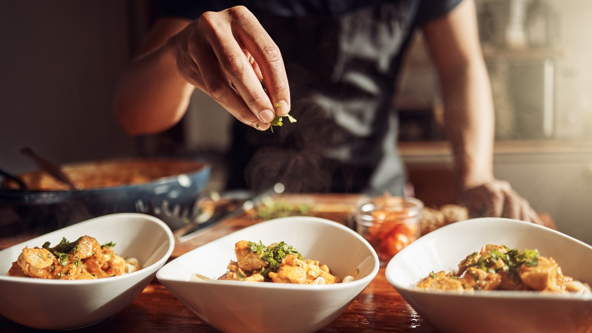
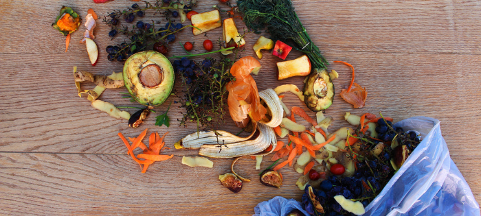

Farm-to-Table
We believe in the power of only using the freshest ingredients sourced from our local farmers. Our farm-to-table approach means not only does your meal taste amazing, but it supports our local community, too. By working directly with farmers, we can ensure the quality and sustainability of every meal we serve.

Preparation Process
Every dish is a labor of love, prepared with consideration and precision. Our chefs go to great lengths preparing every meal with methods which stay true to tradition while being innovative in their way. From the hand-selection of seasonal ingredients to artisan ways of preparation, our food tells a story of passion and craftsmanship.

Sustainability
We are committed to reducing our environmental footprint. Our restaurant incorporates sustainable practices, from minimizing waste to using eco-friendly packaging. We strive to create a space where delicious food and sustainability go hand in hand. Every choice we make, from the food we source to the materials we use, reflects our dedication to a greener future.
